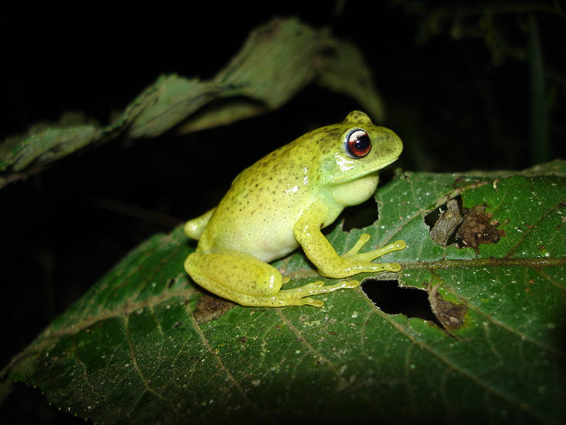

Os representantes desta espécie são geralmente totalmente verdes, podendo variar entre o verde escuro, claro ou amarelado. Possuem várias pintas pequenas pretas por todas as costas. A coloração dos olhos é bastante evidente: no terço superior prateado, nos dois terços inferiores cobre. Podem ser mais facilmente encontrados na natureza de Agosto a Abril, dependendo da região. Ocorre no Distrito federal, Goiás, Minas Gerais, São Paulo, Paraná, Santa Catarina e Rio Grande do Sul até o Nordeste da Argentina (Mapa). Podem realizar tanatose (link) e geralmente vocalizam sobre gramíneas e arbustos em áreas abertas. Não possui veneno mas tem sabor e cheiro não muito agradáveis a predadores.
Fazem seus ninhos escavados no chão às margens de riachos e os ovos, embriões e girinos são aquáticos. Alimentam-se de ácaros, aranhas, besouros e lagartas de borboletas e mariposas.
